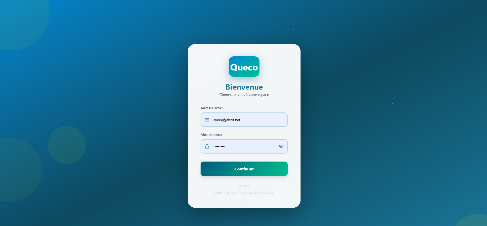

Introduction¶
Découvrez Queco, son architecture, les principaux concepts de la plateforme ainsi que les rôles et permissions qui permettent son fonctionnement.
Dans ce Chapitre
|
Apres ce Chapitre, vous serez en mesure de :
|
|---|
1.1 Qu’est-ce que Queco ?¶
Queco est un système de gestion des files d’attente (QMS) basé sur le cloud, conçu pour fluidifier le traitement des clients et des demandes de service à travers un ou plusieurs points de service physiques ou virtuels. Conçu pour les organisations opérant dans des environnements multi-agences tels que les administrations publiques, les banques, les opérateurs de télécommunications et les centres de services, Queco élimine le suivi manuel des files d’attente, réduit les temps d’attente et offre aux gestionnaires une visibilité en temps réel sur les performances des agents et la qualité du service.
Au cœur de son fonctionnement, Queco permet trois actions essentielles :
-
Organiser : Structurer vos agences, définir les guichets de service et configurer les services proposés.
-
Exploiter : Créer et traiter les tickets de service en temps réel, chaque ticket étant orienté vers le guichet et l’agent appropriés.
-
Analyser : Suivre les taux d’occupation, les volumes de service, les temps d’attente et les performances des agents grâce aux outils d’analyse intégrés.
 Figure 1.1 Vue d'ensemble de la plateforme Queco / écran de connexion |
|---|
A qui s’adresse ce Manuel ?¶
Ce manuel est destiné à l’ensemble du personnel qui utilise la plateforme Queco. Selon votre rôle, seules certaines sections vous concerneront. Le tableau ci-dessous indique les chapitres les plus pertinents pour chaque type d’utilisateur.
| Rôle | Responsabilités | Chapitres pertinents |
|---|---|---|
| Super Admin | Accès complet à la plateforme ; création des agences, des utilisateurs et des rôles | Tous les chapitres |
| Gestionnaire | Supervise les agents, suit les analyses et gère les services | Ch. 3, 5, 6, 7 |
| Agent (Guichetier) | Traite quotidiennement les tickets au guichet | Ch. 2, 6 |
1.2 Vue d’ensemble de l’architecture de la plateforme¶
Queco est conçu autour d’un modèle organisationnel hiérarchique. Comprendre cette structure est essentiel avant de configurer ou d’utiliser la plateforme.
Plateforme (Globale) : Environnement de niveau supérieur géré exclusivement par le Super-administrateur. Elle contient toutes les agences ainsi que leurs données.
→ Agence : Une unité organisationnelle indépendante (par exemple, une agence bancaire, une succursale ou un département). Chaque agence dispose de ses propres utilisateurs, guichets et services.
→ Guichet : Un point de service physique ou virtuel au sein d’une agence. Les agents sont affectés à des guichets pour traiter les tickets.
→ Service / Opération : Une catégorie de prestations proposée par une agence (par exemple : Ouverture de compte). Chaque service comprend une ou plusieurs opérations (tâches spécifiques).
→ Ticket : Une demande de service créée pour un client. Un ticket est associé à un service ou à une opération spécifique et est automatiquement orienté vers un guichet disponible.
1.3 Concepts clés et terminologie¶
Le glossaire suivant définit les termes utilisés tout au long de ce manuel. Il est recommandé de vous familiariser avec ces notions avant de poursuivre la lecture des chapitres suivants.
| Terme | Definition |
|---|---|
| Agence | Une unité organisationnelle indépendante au sein de Queco. Chaque agence gère ses propres guichets, utilisateurs et services. |
| Agent / Guichetier | Utilisateur de première ligne qui opère à un guichet et traite les tickets des clients. |
| Analytique (Analytics) | Module de reporting intégré affichant les données d’activité en temps réel et historiques pour chaque agence. |
| Guichet (Counter) | Point de service (bureau physique ou canal virtuel) où les tickets sont traités. |
| Tableau de bord (Dashboard) | Écran principal affiché après connexion, adapté au rôle de l’utilisateur et présentant les informations essentielles ainsi que les actions rapides disponibles. |
| Gestionnaire (Manager) | Utilisateur disposant de droits de supervision sur les agents, les analyses et la configuration des services au sein de son agence. |
| Opération | Action ou tâche spécifique au sein d’un service (par exemple : « Vérification d’identité » dans le cadre du service « Ouverture de compte »). |
| Permission | Droit d’accès spécifique attribué à un rôle, déterminant les actions qu’un utilisateur est autorisé à effectuer. |
| Rôle | Profil nommé (Super-administrateur, Gestionnaire, Agent) regroupant un ensemble de permissions. |
| Service | Catégorie de prestations proposée aux clients par une agence (par exemple : Paiement, Enregistrement, Inscription). |
| Session | Période d’authentification active d’un utilisateur. Les sessions expirent après une période d’inactivité pour des raisons de sécurité. |
| Super Admin | Utilisateur de plus haut niveau disposant d’un accès illimité à toutes les fonctionnalités et à toutes les agences de la plateforme. |
| Ticket | Demande de service numérique créée pour un client et suivie tout au long de son cycle de vie, de sa création jusqu’à sa clôture. |
1.4 Résumé des rôles et des permissions¶
Queco utilise un modèle de contrôle d’accès basé sur les rôles (RBAC – Role-Based Access Control). Chaque utilisateur se voit attribuer un rôle unique. Ce rôle détermine les pages, les actions et les données auxquelles l’utilisateur peut accéder.
| Feature / Action | Super Admin | Manager | Agent |
|---|---|---|---|
| Créer / gérer les agences | ✔ | ✘ | ✘ |
| Créer / gérer les utilisateurs | ✔ | Limited | ✘ |
| Attribuer des rôles et des permissions | ✔ | ✘ | ✘ |
| Créer / gérer les guichets | ✔ | ✔ | ✘ |
| Définir les services et les opérations | ✔ | ✔ | ✘ |
| Créer des tickets | ✔ | ✔ | ✔ |
| Traiter les tickets au guichet | ✔ | ✔ | ✔ |
| Consulter les analyses et statistiques | ✔ | ✔ | ✘ |
| Exporter des rapports | ✔ | ✔ | ✘ |
| NOTE | Les permissions peuvent être personnalisées au niveau des rôles par le Super-administrateur. Le tableau ci-dessus reflète les paramètres par défaut. |
|---|---|
1.5 Configuration requise du système¶
Queco est une plateforme web qui ne nécessite aucune installation logicielle. Pour une expérience optimale, les exigences minimales suivantes s’appliquent :
| Component | Requirements |
|---|---|
| Navigateur | Google Chrome 110+, Mozilla Firefox 110+, Microsoft Edge 110+ ou Safari 16+ |
| Connexion Internet | Connexion haut débit stable (minimum recommandé : 2 Mbps) |
| Résolution d’écran | 1280 × 720 ou supérieure |
| JavaScript | Doit être activé dans le navigateur |
| Cookies | Les cookies de session doivent être autorisés |
| Compatibilité mobile | L’interface responsive fonctionne sur les tablettes (largeur ≥ 768 px) ; prise en charge limitée sur les smartphones |
1.6 Comment utiliser ce manuel¶
Ce manuel est structuré pour suivre le flux naturel de configuration et d’utilisation de Queco. Chaque chapitre s’appuie sur le précédent. Nous recommandons aux nouveaux utilisateurs de le lire dans l’ordre, tandis que les utilisateurs expérimentés peuvent accéder directement au chapitre pertinent à l’aide de la table des matières.
| Convention | Meaning |
|---|---|
| Texte en gras | Noms des éléments de l’interface utilisateur, libellés des boutons ou noms des champs (par exemple : cliquez sur Enregistrer). |
| Étapes numérotées | Les listes numérotées indiquent des étapes séquentielles qui doivent être suivies dans l’ordre. |
| Encadrés REMARQUE | Les encadrés bleus contiennent des conseils utiles ou des informations complémentaires. |
| Encadrés AVERTISSEMENT | Les encadrés jaunes signalent des actions pouvant avoir des conséquences importantes ou irréversibles. |
| [CAPTURE D’ÉCRAN] | Les encadrés en pointillés indiquent l’emplacement où des captures d’écran seront insérées. |
| NOTE | Les captures d’écran de ce manuel ont été réalisées à partir de la version Sprint 1 de la plateforme Queco. L’interface pourra évoluer dans les versions futures, mais les principaux processus de travail resteront cohérents. |
|---|---|
Chapitre 2